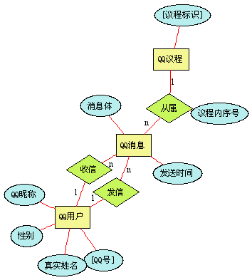
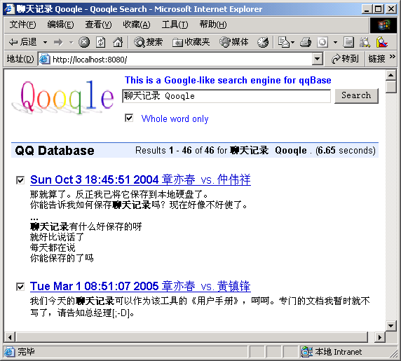
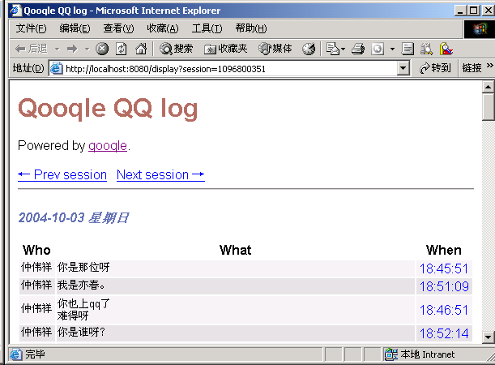

| qooqle - QQ Log Management System based on Web Databases |
qooqle - QQ Log Management System based on Web Databases
章亦春 <agent2002@126.com>
3030602110 计算机0304班
计算机科学与通信工程学院 江苏大学
Maintainer: Agent Zhang <agentzh@gmail.com> Date: 14 Jan 2006 Last Modified: 15 Jan 2006 Version: 0.01
本文档描述了我的数据库课程设计的一个项目，Qooqle.
Qooqle 是我在本学期开发的一个基于 Web 数据库的 QQ 聊天记录的 管理系统。我在本文中将对 Qooqle 的需求和基本功能，特别是 Qooqle 使用的数据库的设计和实现等方面的问题进行比较详细的介绍。
下面我以 FAQ 通常采用的一问一答的形式，对 Qooqle 进行 35000 英尺上的“鸟瞰”。当然了，这些描述亦可视为对 Qooqle 及其数据库 模型的需求分析。
看到 Qooqle 这个名字，应该觉得挺眼熟的，因为它让我们想起著名的 Web 搜索引擎 Google. 事实上，Qooqle 这个名字的由来就是将 Google 中的 Gg 替换成了 Qq. 于是，其言下之意就是对 QQ 进行 某种形式的 ``google''. :=)
Qooqle 是一种基于关系型数据库的 QQ 聊天记录的管理系统。Qooqle 通过用户指定的任何一种数据库，来对用户的 QQ 聊天记录进行统一 存储，并通过一个内嵌式的微型 HTTP 服务器，向用户提供界面酷似 Google 的查询与检索聊天记录的服务。
我是一个 QQ 谜，喜欢挂在线上，和我的好朋友们一起讨论技术或者生活 方面的事情。因此长期以来我一直希望能对由此产生的大量的 QQ 聊天记录 进行统一的保存与管理。
编写 Qooqle 的直接动力是来自本学期的“计算机组成原理”的课程设计。 由于我在该课程设计中开发的 Salent 项目达到了惊人的规模，因此在短 时间内，从零开始编写设计报告是极为困难的。因此我想到了将平日里我 在 QQ 上和同学们探讨 Salent 项目的那些零散的聊天信息，通过关键 字的查询，集中到一起，然后再通过手工编辑，连缀成文，这不就得到了 一篇相当生动、相当详细的报告？在这种方式下，如何从我浩如烟海的 QQ 聊天记录中有效而快速地筛选出与 Salent 有关的聊天信息，是最为关键的。
我知道 QQ 自带有聊天记录搜索与管理界面，但是它根本满足不了我上面的 需求。QQ 的搜索工具，只能以单条 QQ 消息为单位进行查询，因此查询 得到的结果都是直接含有查询关键词的一条条 QQ 消息，我根本没有办法得 到这些消息原来的上下文。我实际需要的是含有关键词的一段一段聊天记录， 这样我才能将它们连缀成一篇报告。
另外，QQ 自带的管理工具只能处理自上次 QQ 安装以来记录下的聊天信息。 如果想要搜索更多、更早的消息，我们必须手工对聊天记录的备份文件进行导 入。这显然是不可接受的。聊天记录的信息是以加密的方式存贮在 QQ 安装路 径下，因此无论是导入还是导出，都无法自动化。
于是在强烈的需求拉动下，经过我一个下午的 hacking，Qooqle 终于 出世了。我于是很快利用 Qooqle 与 Mozilla 浏览器的组合在很短的 时间内就将那篇报告所需的 QQ 聊天素材搜集到了一起。
Qooqle 对 QQ 版本的依赖仅限于 QQ 生成的聊天记录备份文件的格式。 经过测试，Qooqle 能正确解析 QQ 2003, 2004, 和 2005 所使用的备 份文件格式。我相信实际支持的 QQ 版本应该更多，如果你发现其他版本 的 QQ 也能和 Qooqle 一起工作，请告诉我，谢谢。
Qooqle 项目处于现代的版本控制系统 Subversion (SVN) 的管理之下，因 此你总是可以从我在德国的 SVN 中央服务器
https://svn.berlios.de/svnroot/repos/unisimu/Perl/qqBase
获得。该服务器允许匿名下载。嗯，或许你需要一个 SVN 客户程序来下载整个项 目，而不是从 Web 浏览器中一个文件一个文件地复制到本地硬盘。
对于 Windows 用户而言，TortoiseSVN 是很值得一试的。
使用 Qooqle 只需要三个基本步骤：
你就可以看见 Qooqle 查询主页了！当然，如果将上面的 URL 中的 localhost 替换成你机器的 IP 地址，这样 Internet 上的所有用户都可以访问你机器上的 Qooqle 查询系统了。当然，出于隐私方面的考虑，你在使用 Qooqle 的时候， 应该断开网络连接，以避免他人窃取你的聊天记录。
很自然地，作为 Qooqle 的作者，我几乎每天都在使用 Qooqle，因为我在开发 各个项目的过程中，太习惯以 QQ 聊天的方式来“取代”严格意义上的程序文档了。 毕竟与 QQ 好友们绘声绘色地介绍自己的项目，比自己埋头编写文档，要有趣得多。 当然了，这篇报告还是我一个人“埋头”搞出来的。
由于 QQ 在我们中国学生当中是如此流行，以集中而便捷的方式来组织 和管理自己的 QQ 聊天记录也是非常普遍的需求。比如我们班的周鹏同学和 5 班的黄东阳同学都主动地向我询问有关 Qooqle 方面的事宜。现在，他 们都已成为 Qooqle 的用户了。
数据库是 Qooqle 系统的心脏。因为任何应用都是围绕着数据展开的，而 数据就是存储在数据库中的，对数据的存取都得通过 DBMS 的 API. 本文 作为数据库课程设计的题目，理所当然的，将把描述的重点放在数据库的设 计与实现上，而不是上层的 Perl 应用。
Qooqle 的数据库在当初设计的时候就制定了下列目标：
Qooqle 能透明地连接到 Oracle, MS SQL Server, MS Access, SQLite, MySQL 等主流的 RDBMS 的数据库。在不同的 RDBMS，乃 至于不同的 OS 之间进行切换，都不用修改一行代码。
易用性数据库模式应当方便各种上层应用对数据的更新与查询，便于转换为上层 应用所需的数据表示形式。
除了上述两个目标之外，很明显，还有避免数据冗余等方面的常规需求。
Qooqle 目前的实现基本上达到了上述设计目标。
Qooqle 使用的数据库所对应的概念模型如下所示：
QQ消息 （消息体，发送时间）
QQ议程 （[议程标识]）
QQ用户 （[QQ号]，真实姓名，QQ昵称，性别）
从属 QQ消息 : QQ议程 = n : 1 （议程内序号）
收信 QQ消息 : QQ用户 = n : 1
发信 QQ消息 : QQ用户 = n : 1
注意，我用方括号[] 标出的属性为实体的主码。
我的 er-diag 脚本根据上面的概念模型的文本描述，生成了下面的 E-R 图：

概念模型中的“QQ议程”这个实体需要专门讨论一下，因为在原始的 QQ 聊天记录 备份文件中并没有这个概念。它是 Qooqle 自己引入的。
那么什么是“议程” (Session) 呢？议程就是在时间上紧密相连的若干条 QQ 消 息的有序集。简单说来，一个议程就是平常所讲的“一段聊天”。长的议程可以有上 百条消息，而短的可以只由单条消息构成。
议程内的 QQ 消息都拥有一个“议程内序号”的属性，它标识了 QQ 消息在所属议 程中出现的先后顺序。或许我们会认为这是多此一举，因为我们在理论上应该可以 按消息的发送时间进行排序得到这个“议程内序号”。但是，马上我们就会看到，QQ 消息的发送时间是不可信任的。
虽然 MSN Messager 也有“议程”的概念，但是划分议程的标准是不同的。Qooqle 认为，如果 2 条彼此相邻的消息之间的收/发时间相隔大于或等于 20 分钟，则认 为这 2 条消息分属于上下两个不同的议程。
事实上，实际的议程分割算法比上面讲的复杂得多，因为 QQ 记录下的发送时间都 是发信人的本地时间 (local time)，于是正在聊天的两个用户的计算机时间 不可能完全相同，即便他们处于同一时区。毕竟，计算机时间都是人为设定的。所以 信任用户的本地时间，并以此作为议程划分的唯一依据，绝对是错误的。
Qooqle 内部实际使用的议程分割算法会对用户的时间戳变化进行追踪，综合考虑 不同用户所发消息在备份文件中的先后顺序，对不同用户的时间进行“同步校正”。 虽然，绝对正确的划分是不可能实现的，但是我们即便面对极其恶劣的数据，也能 得到符合直观的比较理想的划分结果。
QQ 议程在 Qooqle 的查询服务中，扮演着极为重要的角色。QQ 议程提供了查询 的理想单位。在时间上紧密相连的一组 QQ 消息，在逻辑上通常也会紧密相连，它 为包含有关键词的一条或几条 QQ 消息提供了理想的“上下文”。
如果把 Qooqle 和 Google 放在一起来比较的话，Qooqle 中的 QQ 议程就相当 于 Google 搜索结果中列出含有关键词的“网页”，而 QQ 消息只相当于“网页”中的 一个个段落。
根据上面给出的概念模型，我们可以很快得到对应的关系模型。
QQ消息 （消息体，[发送时间，{发信人}，{收信人}]，议程内序号，{议程标识}）
QQ用户 （[QQ号]，真实姓名，QQ昵称，性别）
这里我们仍用方括号 [] 标出关系的主码，而用花括号 {} 标出关系的外码。
为了减少数据冗余和关系的个数，我们将 1:n 的联系集，一律合并到 n 端实体集所 对应的关系中。于是“从属”，“收信”，和“发信”都被合并到了它们共同的“n 端”―― QQ 消息的关系中。
下面我们对关系模型中的一些重要的问题进行一番探讨。
我首先想到的是将 QQ 消息的发送时间作为消息的主码。但这明显是行不通的。且不说 用户的本地时间不可信任，即便用户的时间是统一的，但该时间只能精确到秒。两个 QQ 用户完全可能在同一秒内发送各自的消息，而以发送时间作为主码将导致只有其中 一个用户的信息可以插入数据库。
发送时间加上消息体也不足以区分不同的 QQ 消息。难道不会有两个 QQ 好友在同 一秒内向你发送“你好”吗？
事实上，Qooqle 数据库目前以发送时间、发信人和收信人这 3 个字段作为联合主码 的方法亦会引发争议。打字速度极快的用户或者非人类用户 （qq-bot 程序）完全可以 在同一秒内连续向你发送不同的消息。尽管这种可能微乎其微。如果将消息体字段也 加进主码内，或许可以得到更“好”一些的解决方案，但我担心这会增加 DBMS 进行主码 唯一性验证的开销。
最优雅的方式还是为“QQ消息”增加一个“QQ标识”字段，该字段由 DBMS 自动设置（比如 通过系统计数器）。这样，qqbase 脚本每次在插入新的 QQ 消息之前，首先通过 触发器检查数据库中是否已存在除“QQ标识”以外的所有字段都相同的记录，如果没有， 则执行插入，否则就作为重复消息予以忽略。注意在这里与“QQ议程”相关的字段也必须 忽略，因为它们是 Qooqle 自动推导出来的信息，属于“派生属性”。
这里用到的触发器机构既可以通过 RDBMS 的内建支持来实现，亦可在应用程序级别进 行模拟。
RDBMS 级别上的触发器拥有无以伦比的性能优势，而且与数据捆绑在一起，与具体的数 据库应用无关。然而不幸的是，并非所有的 DBMS 都支持触发器，而且即便是那些支持 触发器的产品，它们具体的实现方法又是千差万别。因此很难得到一个跨平台的解决方案。
应用级别上的触发器实现却可以工作在任何的 DBMS 之上，因为它根本不依赖于 DBMS 提供的触发器支持。因此它具有极佳的可移植性。
其实，具有自增能力的主码也是可移植性的“灾星”。并非所有的主流 RDBMS 都提供这种 东西，而且即使提供，它们采取的 SQL DDL 语法又是各自的“方言”。因此，出于可移植 性方面的考虑，在当前的Qooqle 数据库设计中，“QQ消息”关系的主码未采用自增主码。
由于“QQ议程”关系只含有一个字段，即其主码“议程标识”，而该信息已在“QQ消息”关系 中引用。因此“QQ议程”关系不包含任何有用的信息，所以完全可以将之从当前的关系模 型中删除。注意，这是一个从实践出发的决定，在理论上略去实体集所对应的关系在任何 时候都是不能接受的。
当然，如果日后，“QQ议程”实体增加了其他字段，比如“QQ 消息数”，则应当在关系模型 中恢复“QQ议程”关系的“合法地位”。:=)
我们给出下面的词汇表：
QQ用户 users
QQ号 user_id
真实姓名 user_name
性别 user_sex
QQ昵称 user_nickname
这样我们就可以得到“QQ用户”关系的 SQL DDL 定义：
create table users
(user_id varchar(20) primary key,
user_name varchar(32),
user_sex char(1),
user_nickname varchar(32))
我们利用下面的词汇表
QQ消息 msgs
发送时间 msg_time
发信人 msg_from
收信人 msg_to
消息体 msg_body
议程内序号 offset
议程标识 session_id
可以得到``QQ消息''关系的 SQL DDL 定义：
create table msgs
(msg_time integer,
msg_from varchar(20),
msg_to varchar(20),
msg_body varchar($BODY_SIZE) not null,
session_id integer not null,
offset integer not null,
primary key (msg_time, msg_from, msg_to),
foreign key (msg_from) references users(user_id),
foreign key (msg_to) references users(user_id))
注意这里的 $BODY_SIZE 是一个变量，默认为 255 （MS Access 的上限）. 如果使用的 DBMS 支持大于 255 的 varchar 数据类型（比如 MS SQL Server 2000），则可以通过 qqbase 脚本的命令行选项将 $BODY_SIZE 的值设得大一些，比如 2048，以减少 QQ 消息体被“截断”的可能性。
细心的读者可能已注意到上面的 msgs 表的定义中，表示时间的 msg_time 字段使用了 integer 类型。这乍一看确实比较古怪。为什么不使用 SQL 中专门的日期和时间类型呢？msg_time 的整型值又是如何表示出时间的呢？ 我下面就对这两个问题进行解答。
不同的 RDMBS 对日期和时间类型的支持不尽相同，于是可移植性法则在这里 又起效力了。
msg_time 的整型值的含义就是 C 标准库中 time 返回的整型值的含义：
Returns the number of non-leap seconds since whatever
time the system considers to be the epoch, suitable for
feeding to gmtime and localtime. On most systems the
epoch is 00:00:00 UTC, January 1, 1970; a prominent
exception being Mac OS Classic which uses 00:00:00,
January 1, 1904 in the current local time zone for its
epoch.
由于在 Mac OS Classic 这样的系统上，time 函数返回的值不同于 Win32/UNIX 等平台，因此，位于 UNIX 平台上的 qooqle 脚本访问在 Mac OS Classic 上利用 qqbase 脚本创建的 QQ 数据库，肯定会发生 时间表示方面的错误。因此将 Qooqle 数据库直接在这样的平台之间搬迁 存在着风险。于是，通过 qqbase 脚本建库总是安全的做法。
使用 msg_time 来表示时间还有两方面的好处：
2005-11-03 15:30
11/03/2005 3:30 PM
3 Nov 2005 15:30
由于用流逝的秒数来表示时间，因此我们可以很方便地对时间进行比较大小
或者加减运算。这无论是在 SQL 还是宿主语言的级别上都是如此。
Qooqle 数据库模型无与伦比的可移植性是以通用的数据库 API 为基础 的。Perl 的 DBI 提供了与 RDBMS 无关的数据库接口，其通用性要 胜过微软的 ODBC. 事实上，DBI 可以连接到 ODBC，因此 ODBC 支持 的 DBMS 亦为 DBI 所支持。
Qooqle 系统其实只提供了两个程序： qqbase 和 qooqle.
下面的文档摘自 Qooqle 项目的 README 文件，感谢黄东阳同学当初鼓励 我编写这个文件。呵，现在终于又派上用场了。
使用本 QQ 聊天记录管理系统需要首先设置如下环境变量：
QQ_ID 你本人的 QQ 号
QQ_NICKNAME 你本人的 QQ 昵称
QQ_REAL_NAME 你本人的真实姓名
DSN 你的 QQ 聊天记录数据库的数据源名
如果你使用 Perl 自带的 SQLite 数据库，则无需安装任何数据库软件， 直接将 DSN 设置为
DSN=dbi:SQLite:dbname=C:\QQ.db
C:\QQ.db 是你的数据库的位置，你完全指定其它路径，我的系统会自动在 你指定的位置上创建并使用 .db 文件。
如果你使用的是 MS SQL Server 2000，MS Access, 或者 MS Visual Foxpro 数据库，则需要在 [控制面板] [管理工具] [数据源 (ODBC)] 中建立相应的 数据源，比如起名为 QQBase，则你的 DSN 大约是下面这个样子：
DSN=dbi:ODBC:QQBase
注意 DSN 的值中不能使用汉字，否则可能会出错。
下面给出黄东阳同学的设置样例：
DSN=dbi:SQLite:dbname=E:\QQLog\QQ.db
QQ_ID=54867226
QQ_NICKNAME=仙剑逍遥
QQ_REAL_NAME=黄东阳
从 QQ 中导出聊天记录的过程需要手工完成，导出的聊天记录文件必须按聊天对象的 真实姓名进行分组。比如在黄东阳同学的机器上，聊天记录文件是这样安排的：
E:\QQ聊天记录
├─李建钰
│ 01-275506786.txt
│ 02-275506786.txt
│ 03-275506786.txt
│
├─黄京湘
│ 01-274167486.txt
│ 02-274167486.txt
│
└─黄兴晖
01-273541276.txt
此时我们可以通过下面命令一次性导入所有聊天记录：
perl qqbase.pl E:\QQ聊天记录\*\*.txt
运行此命令时 qqbase.pl 必须在当前工作目录。
注意，每次 qqbase.pl 不会重复导入同一条消息，因此 你可以反复地运行上面的命令而不用担心数据库会迅速膨 胀。
我为 QQ 聊天记录的查询提供了类似 Google 的 Web 界面 (名为 Qooqle)，你可以使用下面的命令启动 Qooqle 服务器:
start perl qooqle.pl
这时服务器就会启动。然后你再打开一个 IE 窗口，在地址 栏中输入下面的 URL：
http://localhost:8080
这时你就可以在 IE 中看到 Qooqle 的查询主页了。
qqbase 脚本专门负责数据库的创建和聊天记录的导入。它直接使用 Perl 的 DBI 对数据库进行操作。用户通过 DSN 环境变量来告知 qqbase 使 用何种数据库。例如
set DSN=DBI:SQLite:dbname=qq.db
就会使我们的工具使用 SQLite 数据库，并将之创建在当前工作目录的
qq.db 文件中。
使用 Windows 的 Access 或者 MS SQL Server 数据库也是很简单的， 只需利用控制面板中的“ODBC数据源”工具建立指向目标数据库的 ODBC 数 据源，比如取名叫 foo，则用下面的命令就可以使我们的文档生成器指向它：
set DSN=DBI:ODBC:foo
这里的 foo 可以指向 ODBC 支持的任何种类的数据库，包括 MS Access, MS dBase, MS Excel, Oracle, Visual FoxPro, 以及 MS SQL Server.
qqbase 在我的机器上的一次典型运行如下所示：
F:\SVK\de\UniSimu\Perl\qqBase>perl qqbase.pl F:\章亦春\QQ聊天记录\*\*.txt
info: Table users found.
info: Table msgs found.
info: 白雪公主/351191921.txt
10 message(s) inserted.
info: 蔡玉飞/313112017-2.txt
182 message(s) inserted.
info: 蔡玉飞/313112017-3.txt
37 message(s) inserted.
info: 蔡玉飞/313112017-4.txt
58 message(s) inserted.
info: 蔡玉飞/313112017-5.txt
66 message(s) inserted.
info: 蔡玉飞/313112017-6.txt
41 message(s) inserted.
...
qooqle 脚本，从实质上讲，是一个 CGI 应用，它为 QQ 数据库提供了 基于 Web 的查询与检索界面。qooqle 在内部使用 CPAN 模块 HTTP::Server::Simple，因此它本身就是一个独立的 HTTP 服务器，并不依赖 于任何外部的 HTTP 服务器（比如 IIS 或者 Apache）。qooqle CGI 应用利用强大的 Perl 模板工具箱（Perl Template Toolkit）来生成 动态网页，因此程序代码和网页模板是分离的。这就提供了极大的灵活性，方 便了软件的维护。
“Qooqle 网站”的界面非常漂亮，我当初制作的时候也没花什么工夫，因为我直接 照搬了 Google 的网页模板。下面是 Qooqle 的主页快照：
很像 Google 的主页吧？呵呵。
Qooqle 返回的查询结果是 QQ 议程的列表，摘要中出现的查询关键词都用粗 体加重显示了（这与 Google 的风格一致）：

点击列表中的某个议程标题上的超链接，比如这里的“Sun Oct 3 18:45:51 2004 章亦春 vs. 仲伟祥”，就会打开一个新的 IE 窗口，里面是就该议程的详细内容：

这个页面的模板倒不是来自 Google，不过也是我从其他网站“借”来的。这种 界面最早出现在一个专门公布 IRC 聊天记录的网站上：
http://colabti.de/irclogger/irclogger_log/perl6?
下面给出 Qooqle 应用中仅有的两个应用程序 qqbase.pl 和 qooqle.pl 的源代码 列表，以及 qqbase.pl 在内部使用的用于分割 QQ 议程的 Perl 模块 Message::Splitter 的源代码。qooqle.pl 还使用了几个 Perl Template Toolkit 的模板文件，我在这里就 不给出了。
#: Message/Splitter.pm
#: 2005-11-03 2005-11-04
package Message::Splitter;
use strict;
use warnings;
use Data::Dumper;
our $Debug = 0;
sub new {
my $class = shift;
my $gap = shift;
return bless {
_prev_a => undef,
_prev_b => undef,
_prev => '',
_delta_a => 0,
_delta_b => 0,
_a => undef,
_b => undef,
_gap => $gap,
}, $class;
}
sub add {
my $self = shift;
my %hash = @_;
if (exists $hash{a}) {
$self->prev_a($self->a);
$self->a($hash{a});
if ($self->prev eq 'a') { # a a
$self->delta_a($self->a - $self->prev_a);
$self->delta_b($self->delta_b - $self->delta_a);
} elsif ($self->prev eq 'b') { # b a
$self->delta_a($self->a - $self->prev_a + $self->delta_a)
if defined $self->prev_a;
$self->delta_b(0);
}
$self->prev('a');
} elsif (exists $hash{b}) {
$self->prev_b($self->b);
$self->b($hash{b});
if ($self->prev eq 'a') { # a b
$self->delta_a(0);
$self->delta_b($self->b - $self->prev_b + $self->delta_b)
if defined $self->prev_b;
} elsif ($self->prev eq 'b') { # b b
$self->delta_a($self->delta_a - $self->delta_b);
$self->delta_b($self->b - $self->prev_b);
}
$self->prev('b');
}
print Data::Dumper->Dump([$self],[qw(self)]) if $Debug;
}
sub should_split {
my $self = shift;
return 1 if !$self->prev;
if ($self->prev eq 'a' and defined $self->a and defined $self->b) {
my $delta = $self->a - $self->b;
if ($delta < $self->gap and $delta >= 0) {
#$self->delta_a($delta) if $delta < $self->delta_a;
return undef;
}
} elsif ($self->prev eq 'b' and defined $self->b and defined $self->a) {
my $delta = $self->b - $self->a;
if ($delta < $self->gap and $delta >= 0) {
#$self->delta_b($delta) if $delta < $self->delta_b;
return undef;
}
}
if ($self->delta_a >= $self->gap and defined $self->prev_a) {
$self->clear;
return 1;
} elsif ($self->delta_b >= $self->gap and defined $self->prev_b) {
$self->clear;
return 1;
} else {
return undef;
}
}
sub clear {
my $self = shift;
$self->delta_a(0);
$self->delta_b(0);
if ($self->prev eq 'a') {
$self->b(undef);
$self->prev_b(undef);
$self->prev_a(undef);
} else {
$self->a(undef);
$self->prev_a(undef);
$self->prev_b(undef);
}
}
sub gap {
return shift->{_gap};
}
sub delta_a {
my ($self, $val) = @_;
if (@_ == 2) {
$self->{_delta_a} = $val;
} else {
return $self->{_delta_a};
}
}
sub delta_b {
my ($self, $val) = @_;
if (@_ == 2) {
$self->{_delta_b} = $val;
} else {
return $self->{_delta_b};
}
}
sub a {
my ($self, $val) = @_;
if (@_ == 2) {
$self->{_a} = $val;
} else {
return $self->{_a};
}
}
sub prev_a {
my ($self, $val) = @_;
if (@_ == 2) {
$self->{_prev_a} = $val;
} else {
return $self->{_prev_a};
}
}
sub b {
my ($self, $val) = @_;
if (@_ == 2) {
$self->{_b} = $val;
} else {
return $self->{_b};
}
}
sub prev_b {
my ($self, $val) = @_;
if (@_ == 2) {
$self->{_prev_b} = $val;
} else {
return $self->{_prev_b};
}
}
sub prev {
my ($self, $val) = @_;
if (@_ == 2) {
$self->{_prev} = $val;
} else {
return $self->{_prev};
}
}
1;
#: qqbase.pl
#: Set up the QQ log database
#: v0.01
#: Copyright (c) 2005 Agent Zhang
#: 2005-11-02 2005-11-13
use strict;
use warnings;
use DBI;
use DBI::Const::GetInfoType;
use List::Util qw(first);
use File::Spec;
use POSIX 'mktime';
use Getopt::Std;
use Message::Splitter;
#use Smart::Comments;
#use encoding 'GBK';
#use Encode qw(encode decode);
my %opts;
getopts('s:', \%opts);
my $my_qq_id = get_env('QQ_ID');
my $my_qq_name = get_env('QQ_NICKNAME');
my $my_real_name = get_env('QQ_REAL_NAME');
my $TotalInsert = 0;
my $BODY_SIZE = +$opts{s} || 255;
local $| = 1;
my %schema_sql = (
'msgs' => <<_EOC_,
create table msgs
(msg_time integer,
msg_from varchar(20),
msg_to varchar(20),
msg_body varchar($BODY_SIZE) not null,
session_id integer not null,
offset integer not null,
primary key (msg_time, msg_from, msg_to),
foreign key (msg_from) references users(user_id),
foreign key (msg_to) references users(user_id))
_EOC_
'users' => <<'_EOC_',
create table users
(user_id varchar(20) primary key,
user_name varchar(32),
user_sex char(1),
user_nickname varchar(32))
_EOC_
);
my $dsn = $ENV{DSN};
die "error: No env DSN set.\n" unless $dsn;
my $dbh = DBI->connect($dsn, { PrintError => 1, RaiseError => 0 });
my @tables;
my $sth = $dbh->table_info();
if (ref $sth) {
while (my $rowref = $sth->fetchrow_arrayref) {
push @tables, $rowref->[2];
}
} else {
@tables = $dbh->tables();
}
my $sep = $dbh->get_info( $GetInfoType{SQL_IDENTIFIER_QUOTE_CHAR} );
map { s/$sep//g } @tables;
#die "@tables\n";
foreach my $table (qw(users msgs)) {
if (not first { $_ eq $table } @tables) {
print "info: Creating table $table...\n";
create_table($table);
} else {
print "info: Table $table found.\n";
}
}
my $msg_dup_sth = $dbh->prepare(
"select msg_time from msgs where msg_time=? and msg_from=? and msg_to=?"
);
my $user_dup_sth = $dbh->prepare(
"select user_id, user_name from users where user_id=?"
);
my @files = map glob, @ARGV;
@files = grep { -f $_ } @files;
@files = sort { $a cmp $b } @files;
#$" = "\n";
#die "@files\n";
die "error: No file specified.\n" if !@files;
for my $file (@files) {
process_log($file);
}
$msg_dup_sth->finish;
$user_dup_sth->finish;
$dbh->disconnect();
warn "\ninfo: For total $TotalInsert message(s) inserted.\n";
sub create_table {
my $table = shift;
if (not $dbh->do($schema_sql{$table})) {
warn "Create table $table failed\n";
}
}
sub process_log {
my $logfile = shift;
my @dirs = File::Spec->splitdir($logfile);
my $s;
if (@dirs == 1) {
$s = $logfile;
} else {
$s = join('/', $dirs[-2], $dirs[-1]);
}
print "info: $s\n";
open my $in, $logfile or
die "Can't open $logfile for reading: $!\n";
#sleep(1);
my $real_name = $dirs[-2] if @dirs >= 2;
$real_name = ($real_name =~ /^[^\w]+$/) ? $real_name : undef;
#warn " info: $real_name\n" if $real_name;
my ($msg_from, $msg_to, $msg_time, $msg_body);
my ($host, $host_name, $guest, $guest_name);
my ($session_id, $offset);
$offset = 0;
my $insert_count = 0;
my $splitter = Message::Splitter->new(20 * 60); # 20 min
my $ready = 0;
my $state = 'S_INIT';
while (<$in>) {
#$_ = decode('GBK', $_);
#warn "$_" if /;
s/\r//g;
#warn $_;
if (/^$/ or /^-+$/) {
$ready = 1;
next;
}
if ($state eq 'S_INIT') {
#warn $_;
if (/^ 用户 (?: :|: ) \s* (\d+) \( (.+) \) /x) {
($host, $host_name) = ($1, $2);
#warn " info: $host_name";
check_user($host, $host_name, $real_name);
} elsif (/^用户/) {
#warn "Matched!";
($host, $host_name) = ($my_qq_id, $my_qq_name);
#warn " info: $host $host_name";
check_user($host, $host_name, $real_name);
}
if (/^ 消息对象 (?: :|：) \s* (\d+) \( (.+) \) /x) {
($guest, $guest_name) = ($1, $2);
#warn "$guest, $guest_name";
check_user($guest, $guest_name, $real_name);
#warn "$msg_from => $msg_to\n";
$state = 'S_START';
}
}
elsif ($state eq 'S_START' and $ready and
/^(\d{4})-(\d{2})-(\d{2}) (\d{2}):(\d{2}):(\d{2}) (.+)/) {
my ($year, $mon, $mday, $hour, $min, $sec) =
($1-1900, $2-1, $3, $4, $5, $6);
my $name = $7;
if ($msg_time and $msg_from and $msg_to and $msg_body) {
# insert the previous message (if any!):
$splitter->add(($msg_to eq $guest ? 'a' : 'b') => $msg_time);
if ($splitter->should_split) {
$session_id = $msg_time;
$offset = 0;
}
#warn " insert $msg_time, $msg_from, $msg_to, $session_id, $offset\n$msg_body\n";
$insert_count +=
insert_msg($msg_time, $msg_from, $msg_to, $msg_body, $session_id, $offset);
$offset++;
# make time for the current message:
$msg_time = mktime($sec, $min, $hour, $mday, $mon, $year);
} else {
# for the first message in the backup file:
$msg_time = mktime($sec, $min, $hour, $mday, $mon, $year);
$session_id = $msg_time;
$offset = 0;
}
#my $date = localtime($msg_time);
#chomp;
#die "$_ => $date\n";
#($sec,$min,$hour,$mday,$mon,$year,$wday,$yday,$isdst) =
# localtime(msg_time);
if ($name eq $guest_name) {
$msg_from = $guest;
$msg_to = $host;
} elsif ($name eq $host_name) {
$msg_from = $host;
$msg_to = $guest;
} else {
$msg_from = $guest;
$msg_to = $host;
}
#$msg_from = $name eq $guest_name ? $guest : $host;
#$msg_to = $name eq $guest_name ? $host : $guest;
die "Internal assertion failed: $msg_from sent msg to itself"
if $msg_from eq $msg_to;
### $guest_name
### $host_name
### $guest
### $host
$msg_body = '';
$ready = 0;
}
elsif ($state eq 'S_START') {
$msg_body .= $_;
}
if (!/^$/) {
$ready = 0;
}
}
if ($msg_time and $msg_from and $msg_to and $msg_body) {
$splitter->add(($msg_to eq $guest ? 'a' : 'b') => $msg_time);
if ($splitter->should_split) {
$session_id = $msg_time;
}
#warn " insert $msg_time, $msg_from, $msg_to, $session_id, $offset\n$msg_body\n";
$insert_count +=
insert_msg($msg_time, $msg_from, $msg_to, $msg_body, $session_id, $offset);
}
close $in;
warn " $insert_count message(s) inserted.\n";
$TotalInsert += $insert_count;
}
sub check_user {
my ($id, $nickname, $real_name) = @_;
if ($id eq '279005114') {
$real_name = $my_real_name;
}
my $sth = $user_dup_sth;
my ($user_id, $user_name);
$sth->execute($id);
$sth->bind_columns(\$user_id, \$user_name);
if ($sth->fetch() and $user_id) {
#warn "User id $id found!";
if (!$user_name and $real_name) {
my $sth = $dbh->prepare(
'update users set user_name=? where user_id=?'
);
$sth->execute($real_name, $user_id);
}
} else {
$sth = $dbh->prepare(
'insert into users values (?,?,?,?)'
);
$sth->execute($id, $real_name, undef, $nickname);
}
}
sub insert_msg {
my ($msg_time, $msg_from, $msg_to, $msg_body, $session_id, $offset) = @_;
#warn "\n+++++++++++++++++\n";
#warn "@_";
#warn "-----------------\n";
my ($user_id, $user_name);
my $sth = $msg_dup_sth;
$sth->execute($msg_time, $msg_from, $msg_to);
if ($sth->fetch) { return 0; }
$sth = $dbh->prepare(
'insert into msgs values (?,?,?,?,?,?)'
);
$msg_body =~ s/^[\s\n]*\n|[\s\n]+$//gs;
my $raw = $msg_body;
$msg_body = substr($raw, 0, $BODY_SIZE);
if ($msg_body ne $raw) {
warn "\nMessage trimmed to $BODY_SIZE chars long:\n".
"$msg_body\n".
"-----------------------------------------\n";
}
#$dbh->{PrintError} = 0;
if (not $sth->execute($msg_time, $msg_from, $msg_to, $msg_body, $session_id, $offset)) {
warn "$msg_time, $msg_from, $msg_to, $msg_body, $session_id, $offset";
}
#$dbh->{PrintError} = 1;
return 1;
}
sub get_env {
my $name = shift;
my $val = $ENV{$name};
die "Environment $name not set.\n" if !defined $val;
return $val;
}
#: qooqle.pl
#: Web interface for qqBase
#: v0.01
#: Copyright (c) 2005 Agent Zhang
#: 2005-11-06 2005-12-09
use strict;
use warnings;
use HTTP::Server::Simple;
use DBI;
my $LongReadLen = 2048;
my $dsn = $ENV{DSN};
die "No env DSN set. So no database is available\n" unless $dsn;
my $time = 0;
my $server = MyServer->new();
$server->run();
package MyServer;
use warnings;
use strict;
use URI::Escape;
use Template;
#use CGI::Carp qw(fatalsToBrowser);
use POSIX qw(strftime);
use Time::HiRes;
use base qw(HTTP::Server::Simple::CGI);
our $WholeWord = 0;
sub handle_request {
$time = Time::HiRes::time;
my ($self, $cgi) = @_;
my $base = $cgi->url;
$base = quotemeta($base);
#warn "base = $base\n";
my $url = $cgi->self_url;
$url =~ s,^$base/,,;
$url =~ s/\?.*$//g;
$url = uri_unescape($url);
$url = '' if !$url;
warn "URL: $url\n";
#my @params = $cgi->param;
#warn "@params";
$WholeWord = $cgi->param('wholeword');
#warn " Whole Word: $WholeWord\n";
if ($url eq '/' or $url eq '') {
if (my $query = $cgi->param('query')) {
#warn "Query: $query\n";
my @words;
while ($query =~ s/"\s*([^"]*)"//) {
push @words, $1;
}
push @words, split /\s+/, $query;
@words = grep !/^\s*$/, @words;
map s/\s*$//, @words;
local $" = ':';
warn "Search words: @words\n";
if (!@words) {
dump_home($cgi);
} else {
dump_list($cgi, @words);
}
}
else {
dump_home($cgi);
}
}
elsif ($url =~ m[^/?join]) {
warn "Joining...\n";
my @sessions = $cgi->param('session');
dump_sessions($cgi, @sessions);
}
elsif ($url =~ m[^/?display_prev]) {
warn "Displaying prev...\n";
dump_prev($cgi, $cgi->param('session'));
}
elsif ($url =~ m[^/?display_next]) {
warn "Displaying next...\n";
dump_next($cgi, $cgi->param('session'));
}
elsif ($url =~ m[^/?display]) {
warn "Displaying...\n";
dump_sessions($cgi, $cgi->param('session'));
}
else {
dump_file($cgi, $url);
}
}
sub dump_home {
my $cgi = shift;
dump_file($cgi, 'index.html');
}
sub dump_list {
my $cgi = shift;
my @words = @_;
my $query = <<_EOC_;
select session_id, U1.user_name as sender, U2.user_name as receiver, msg_body
from msgs, users as U1, users as U2
where msgs.msg_from=U1.user_id and msgs.msg_to=U2.user_id and
_EOC_
$query .= '(' . (join ' or ', (map { "msg_body like '%$_%'" } @words)) . ')';
$query .= "\norder by session_id asc";
#warn "SQL: $query\n";
my $dbh = connect_db();
my $sth = $dbh->prepare($query);
$sth->execute;
my @hits;
while (my $ref = $sth->fetchrow_hashref) {
#warn "REF: $ref\n";
my $msg = $ref->{msg_body};
my $matched = 0;
for my $word (@words) {
my $pat = quotemeta($word);
if ($word =~ m/\W/ or !$WholeWord) {
if ($msg =~ s,$pat,<B>$&</B>,isg) {
$matched = 1;
}
}
elsif ($WholeWord and $msg =~ s,\b$pat\b,<B>$&</B>,isg) {
$matched = 1;
}
}
next if !$matched;
$msg = quote_html($msg);
my $rec = {
'time' => scalar localtime($ref->{session_id}),
session => $ref->{session_id},
receiver => $ref->{receiver},
sender => $ref->{sender},
message => $msg,
};
push @hits, $rec;
}
warn " info: ", scalar(@hits), " hits\n";
my $elapsed = sprintf("%.2f", Time::HiRes::time - $time);
my $tt = Template->new;
print "HTTP/1.0 200 OK\n";
print $cgi->header(-type=>'text/html', -charset=>'gb2312');
$tt->process(
'tpl/list.tt',
{ whole_word => $WholeWord, query => join(' ', @words), 'elapsed' => $elapsed, hits => \@hits },
\*STDOUT,
) || warn $tt->error();
$dbh->disconnect;
}
sub dump_sessions {
my $cgi = shift;
my @sessions = @_;
my $query = <<_EOC_;
select session_id, msg_time, U1.user_name as sender, U2.user_name as receiver, msg_body
from msgs, users as U1, users as U2
where msgs.msg_from=U1.user_id and msgs.msg_to=U2.user_id and
_EOC_
$query .= '(' . (join ' or ', (map { "session_id=$_" } @sessions)) . ')';
$query .= "\norder by session_id, offset asc";
#warn "SQL: $query\n";
my $dbh = connect_db();
my $sth = $dbh->prepare($query);
$sth->execute;
my $session;
my @hits;
print "HTTP/1.0 200 OK\n";
print $cgi->header(-type=>'text/html', -charset=>'gb2312');
my $first = 1;
while (my $ref = $sth->fetchrow_hashref) {
if ($first) {
warn " info: $ref->{sender} vs. $ref->{receiver}\n";
$first = 0;
}
my $rec = {
session => $ref->{session_id},
session_time => strftime("%Y-%m-%d %a", localtime($ref->{msg_time})),
msg_time => strftime("%H:%M:%S", localtime($ref->{msg_time})),
receiver => $ref->{receiver},
sender => $ref->{sender},
message => quote_html($ref->{msg_body}),
};
push @hits, $rec;
}
#warn "\@hits: ", scalar(@hits), "\n";
my $tt = Template->new;
$tt->process('tpl/session.tt', { hits => \@hits }, \*STDOUT)
|| warn $tt->error();
$sth->finish;
$dbh->disconnect;
}
sub dump_file {
my ($cgi, $fname) = @_;
my $in;
if (!open $in, $fname) {
warn "Internal Server Error: Resource $fname not found: $!";
return;
}
local $/;
binmode $in;
my $content = <$in>;
close $in;
print "HTTP/1.0 200 OK\n\n";
print $content;
}
sub quote_html {
my $src = shift;
$src =~ s,>,>,g;
$src =~ s,<,<,g;
$src =~ s,<B>,<B>,g;
$src =~ s,</B>,</B>,g;
$src =~ s/\n/<br>/gs;
$src =~ s/\t/ /g;
$src =~ s/ / /g;
$src =~ s/(\w) (\w)/$1 $2/g;
return $src;
}
sub connect_db {
my $dbh = DBI->connect($dsn, { PrintError => 1, RaiseError => 0 });
$dbh->{LongReadLen} = $LongReadLen;
$dbh->{LongTruncOk} = 1;
return $dbh;
}
sub dump_prev {
my $cgi = shift;
my $session = shift;
my $prev = 0;
my $query = <<_EOC_;
select session_id
from msgs
where session_id < $session
order by session_id desc
_EOC_
#warn "SQL: $query\n";
my $dbh = connect_db();
my $sth = $dbh->prepare($query);
$sth->execute;
my @hits;
my $ref = $sth->fetchrow_arrayref;
$sth->finish;
$dbh->disconnect;
$prev = $ref ? $ref->[0] : $session;
dump_sessions($cgi, $prev);
}
sub dump_next {
my $cgi = shift;
my $session = shift;
my $next = 0;
my $query = <<_EOC_;
select session_id
from msgs
where session_id > $session
order by session_id asc
_EOC_
#warn "SQL: $query\n";
my $dbh = connect_db();
my $sth = $dbh->prepare($query);
$sth->execute;
my @hits;
my $ref = $sth->fetchrow_arrayref;
$sth->finish;
$dbh->disconnect;
$next = $ref ? $ref->[0] : $session;
dump_sessions($cgi, $next);
}
| qooqle - QQ Log Management System based on Web Databases |